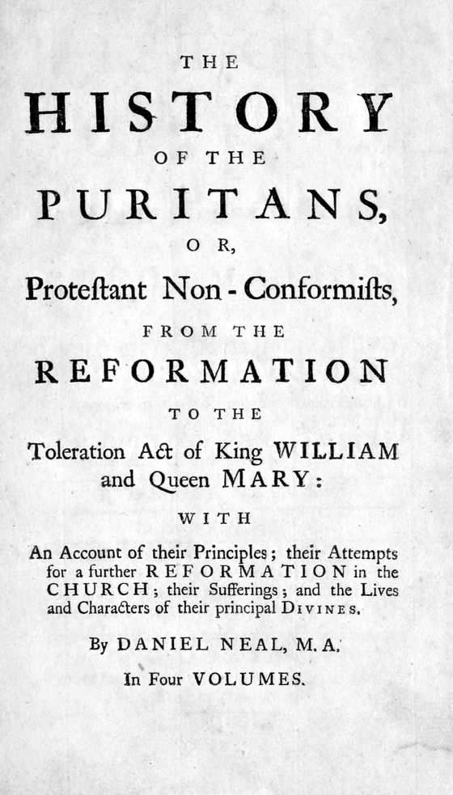
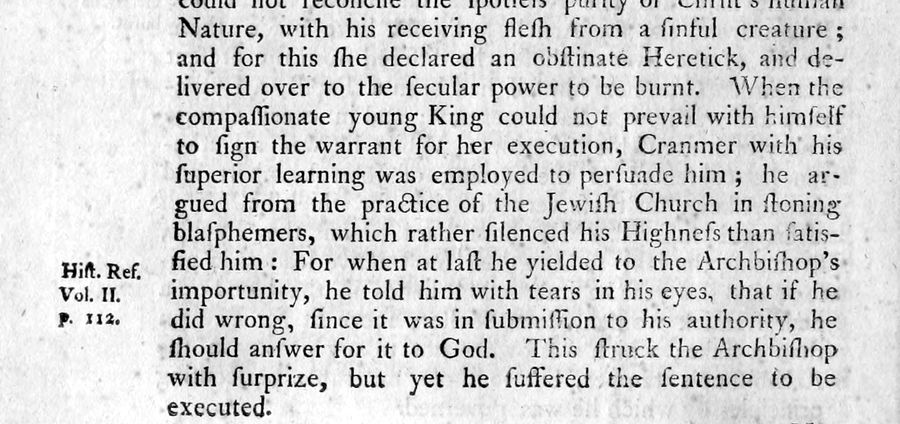
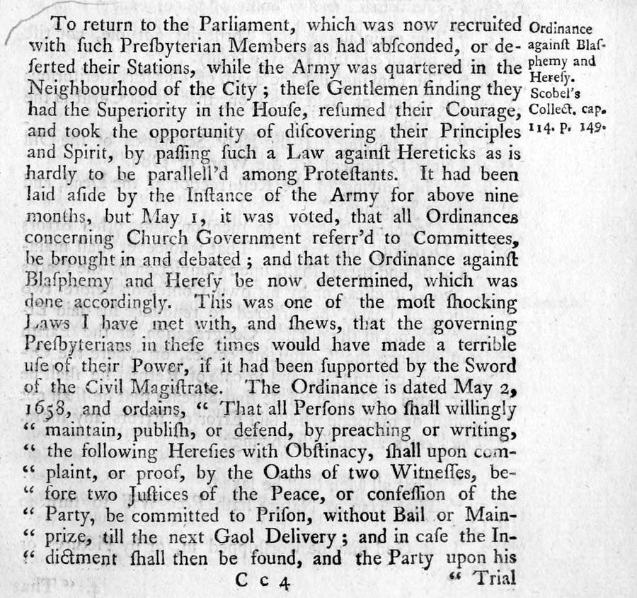
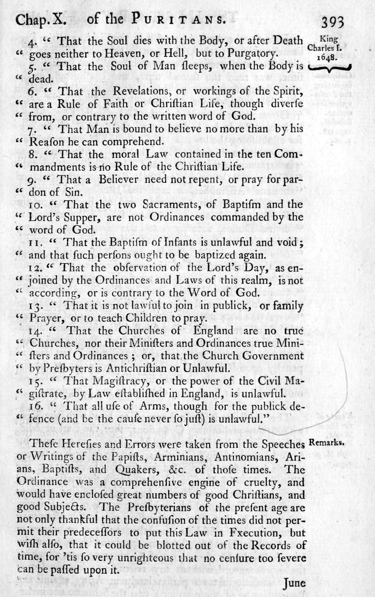

“With tears in his eyes”: Edward VI and Joan Bocher, 1549–1550 (vol. I, p. 48)

English: Dublin ed., vol. I, ch. II, p. 48, scan; margin “King Edw. VI. 1549” and, against the King’s tears, “Hist. Ref. Vol. II. p. 112” (Burnet’s History of the Reformation). Highlighted: what Lecky reports.

… Several Tradesmen that were brought before the Commissioners abjured; but Joan Bocher, or Joan of Kent, obstinately maintained, that “Christ was not truly incarnate of the Virgin, whose flesh being sinful he could not partake of it; but the Word, by the consent of the inward Man in the Virgin, took flesh of her.” These were her words: A Scholastick Nicety, not capable of doing much mischief, and far from deserving so severe a punishment. The poor woman could not reconcile the spotless purity of Christ’s human Nature, with his receiving flesh from a sinful creature; and for this she [was] declared an obstinate Heretick, and delivered over to the secular power to be burnt. When the compassionate young King could not prevail with himself to sign the warrant for her execution, Cranmer with his superior learning was employed to persuade him; he argued from the practice of the Jewish Church in stoning blasphemers, which rather silenced his Highness than satisfied him: For when at last he yielded to the Archbishop’s importunity, he told him with tears in his eyes, that if he did wrong, since it was in submission to his authority, he should answer for it to God. This struck the Archbishop with surprize, but yet he suffered the sentence to be executed.
Just before this, on the same page, Neal describes the commission of April 1549 “to examine and search after all Anabaptists, Hereticks, or Contemners of the Common Prayer”, with power to “deliver them over to the secular arm”: “This was little better than a Protestant Inquisition.” Lecky’s “Cranmer and Ridley, as well as four other bishops, formed the commission” is this commission: Neal lists the Archbishop with the bishops of Ely, Worcester, Chichester, Lincoln and Rochester, six in all, and Ridley was then Bishop of Rochester. On the next page Neal adds the Dutchman George van Parris, burnt in Smithfield in April 1551 for denying Christ’s divinity, “kissing the stake and faggots that were to burn him”.
“Will never admit Toleration”: the Scots Parliament, 1645 (vol. III, p. 244)
English: Dublin ed., vol. III, p. 244, scan; margin “King Charles I. 1645. Rushw. p. 234” and “Scots Declaration against Toleration”. Highlighted: what Lecky quotes.
… “and I am commanded by the Parliament of this Kingdom (says the President) to demand it, and I do in their names demand it.” And the Parliament of this Kingdom is persuaded, that the piety and wisdom of the honourable Houses will never admit Toleration of any Sects or Schisms contrary to our solemn League and Covenant.” At the same time they appeal’d to the people, and published a Declaration “Against Toleration of Sectaries and Liberty of Conscience;” in which, after having taken notice of their great Services, they observe that there is a Party in England who are endeavouring to supplant the true Religion by pleading for Liberty of Conscience, which (say they) is the Nourisher of all Heresies and Schisms. … And however the Parliament of England may determine in point of Toleration and Liberty of Conscience, they are resolved not to make the least Start, but to live and die, for the glory of God, in the entire Preservation of the Truth.
“A comprehensive engine of cruelty”: the ordinance against heresy, 1648 (vol. III, pp. 391–393)
English: Dublin ed., vol. III, ch. X, pp. 391–393, scans n412–n414; margin “Ordinance against Blasphemy and Heresy. Scobel’s Collect. cap. 114. p. 149”. Abridged. Highlighted: what Lecky summarises.

To return to the Parliament, which was now recruited with such Presbyterian Members as had absconded, or deserted their Stations, while the Army was quartered in the Neighbourhood of the City; these Gentlemen finding they had the Superiority in the House, resumed their Courage, and took the opportunity of discovering their Principles and Spirit, by passing such a Law against Hereticks as is hardly to be parallell’d among Protestants. … This was one of the most shocking Laws I have met with, and shews, that the governing Presbyterians in these times would have made a terrible use of their Power, if it had been supported by the Sword of the Civil Magistrate. The Ordinance is dated May 2, 1658 [sic], and ordains, “That all Persons who shall willingly maintain, publish, or defend, by preaching or writing, the following Heresies with Obstinacy, shall upon complaint, or proof, by the Oaths of two Witnesses, before two Justices of the Peace, or confession of the Party, be committed to Prison, without Bail or Mainprize, till the next Gaol Delivery; and in case the Indictment shall then be found, and the Party upon his Trial shall not abjure his said Error, and his defence and maintenance of the same, he shall suffer the pains of death, as in case of Felony, without Benefit of Clergy; … The Heresies or Errors are these following. 1. That there is no God. 2. That God is not omnipresent, Omniscient, Almighty, Eternal, and perfectly Holy. 3. That the Father is not God, that the Son is not God, that the Holy Ghost is not God, or that these three are not One eternal God; or, that Christ is not God equal with the Father. 4. The Denial of the Manhood of Christ … 5. The maintaining that Christ did not die, nor rise again, nor ascend into Heaven bodily. 6. The denying that the death of Christ is meritorious … 7. The denying that the Holy Scriptures … are the Word of God. 8. The denying of the Resurrection of the Dead, and a future Judgment.”
The Ordinance goes on to mention some other Errors of less Demerit, and says, “That whosoever shall maintain or defend them, shall, upon Conviction … be ordered to renounce his said Error or Errors in the publick Congregation of the Parish …; and in case of Refusal he shall be committed to Prison till he find Sureties that he shall not publish or maintain the said Error or Errors any more. The Errors are these following: 1. That all Men shall be saved. 2. That Man by Nature hath Free-Will to turn to God. 3. That God may be worshipped in, or by Pictures or Images. 4. That the Soul dies with the Body, or after Death goes neither to Heaven, or Hell, but to Purgatory. 5. That the Soul of Man sleeps, when the Body is dead. … 9. That a Believer need not repent, or pray for pardon of Sin. … 11. That the Baptism of Infants is unlawful and void … 14. That the Churches of England are no true Churches … 16. That all use of Arms, though for the publick defence (and be the cause never so just) is unlawful.”
These Heresies and Errors were taken from the Speeches or Writings of the Papists, Arminians, Antinomians, Arians, Baptists, and Quakers, &c. of those times. The Ordinance was a comprehensive engine of cruelty, and would have enclosed great numbers of good Christians, and good Subjects. The Presbyterians of the present age are not only thankful that the confusion of the times did not permit their predecessors to put this Law in Execution, but wish also, that it could be blotted out of the Records of time, for ’tis so very unrighteous that no censure too severe can be passed upon it.

Lecky’s summary is accurate: death for “anything contrary to the main propositions comprised in the doctrines of the Trinity and the Incarnation”, life imprisonment without sureties for the lesser errors. His list (“Popish, Arminian, Antinomian, Baptist, or Quaker doctrines”) is Neal’s list of where the errors came from. The sleep of the soul, which Lecky singles out, is error 5.
Further down the rabbit hole
Sources that Lecky cites in the notes next to the ones that cite this page.
- Hutchinson, An Historical Essay concerning WitchcraftCounting the English witch-trials, and the last three hanged
- Buckle, History of Civilization in EnglandWeather and credulity, and the Scottish clergy’s Devil who had been studying for five thousand years
- M’Crie, Life of John Knox“One mass is more fearful to me than ten thousand armed enemies”, and the biographer who excused it
- Macaulay, History of England and EssaysMacaulay on Puritans, bear-baiting and the servile Church
- Baxter, A Holy CommonwealthA Puritan’s syllogism against toleration
- Elrington, Life of UssherTwelve Irish bishops declare toleration “a grievous sin” (1626)


Backlinks
Every place in Rationalism in Europe that links to this page (generated automatically when the site is built).